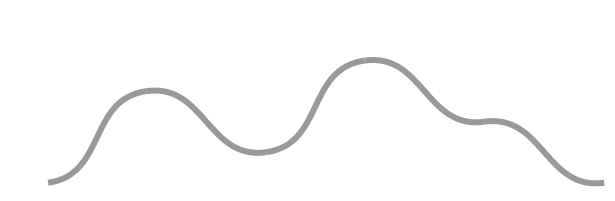
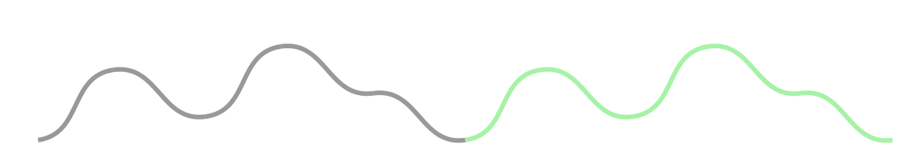
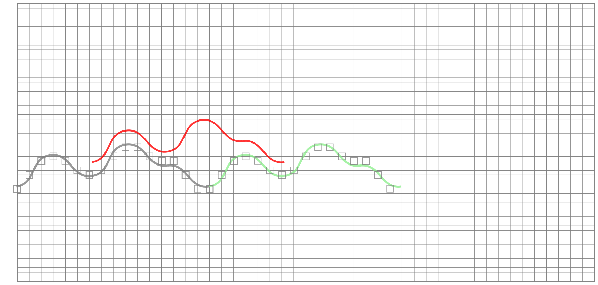
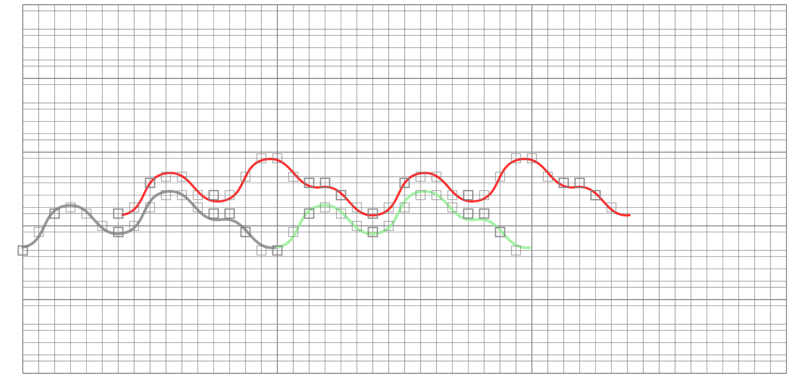

This site describes phyllotaxy generated music.
Phyllotaxy and music are two concepts far appart but they can be related.
Precisely, phyllotaxy can help to generates a music theme, a suite of music notes, a melodic material.
Cannon
A wellknown music theme is at the start of Bach's 2nd fugue in C minor. It starts with the C note.

This theme is repeated with different voices, sometimes overlapping.
Let's a have a look to this memorable piece. The first voice starts with a C on the first measure. On the third measure, the theme starts again, but it starts with a G. A G is seven half tone higher, or a "quint" in music parlance, above a C. Then, on this third measure, this second voice overlaps harmonuously the first voice. The G of the second voice is played with a B flat of the first voice, that is four half tone or a musical third. The next note, a F# on the second voice, is played along a A on the first voice, also a third. And so one.
It is the composer's chore to have the theme well suited for supporting overlapping itself.
Having a theme that repeats itself harmonously with a shift in beats and tone is called a cannon:
- Pachelbel's Canon in D
- "Row, Row, Row Your Boat"
Phylotaxy will help us to compose theme that are suited for cannon with the following idea : if a cannon theme is a curve on a plan, it must overlap with itself with an horizontal and a vertical shift.
Phylotaxy
Phylotaxy means "shape of leaves" ("phyllo" is greek for leave and "taxy" is greek for shape). It is the science developped by botanist, mathematicians and physicists to understand why plants have the shape they have.
In the office of Stephane Douady, a "spiral plants" specialist I visited, the shelves are full of beautiful dried specimen that people sent to him from all over the world. Each plant has spectacular spiral arragenements of leaves that run upward the trunks.
A common spiral plant is the pinecone.
Stephane taught me that when the trunk grows, the cells at the stem divide themselves. New cells end up building the trunk but regularly, one of them differentiates and becomes a leave. Because this happens on a regular tempo, the leaves arrange themselves along the trunk in spiral patterns. Stephane pointed out that if you draw a curve around the trunk to isolate one leave cell from newer leave cells, you end up drawing the "front curve" of the plant growth.
Stephane then compared a new leave cell to the last one. Because leave cells appear regularly, a new cell is always located with the same distance above and the same angle sideway, a rotation near 168 degrees, related to the golden ratio. Therefore, the "front curve" has this interesting geometric feature : but on the new leave cell, it overlaps itself after an upward translation and a rotation. Let's demonstrate this.
Use a grey pen and draw the unfolded the front curve on a piece of paper.
Use a green pen and draw the same curve at the right of the first.
Draw it again on a tracing paper with a red pen and put the tracing paper above and shift it a bit to the right and a bit to the top.

We did it ! The overlapping is perfect except for one space that have the shape of an eye ( the place for the leave).
Generating a theme form the front curve
Now take take the first drawing and add a canevas of vertical measure lines and horizontal pitch lines.
For the pitch lines, the spacing between pitch line follows the scale of your choice. If you choose a C minor scale, the tone differences between notes are 1, 1/2, 1, 1, 1/2, 1 and 3/2.
Now, along the front curve, when it intersect the measure lines, draw some notes of your choosing.
With the second voice note, this gives
Download the generated music score in the musescore musicxml format: Download MusicXML Score